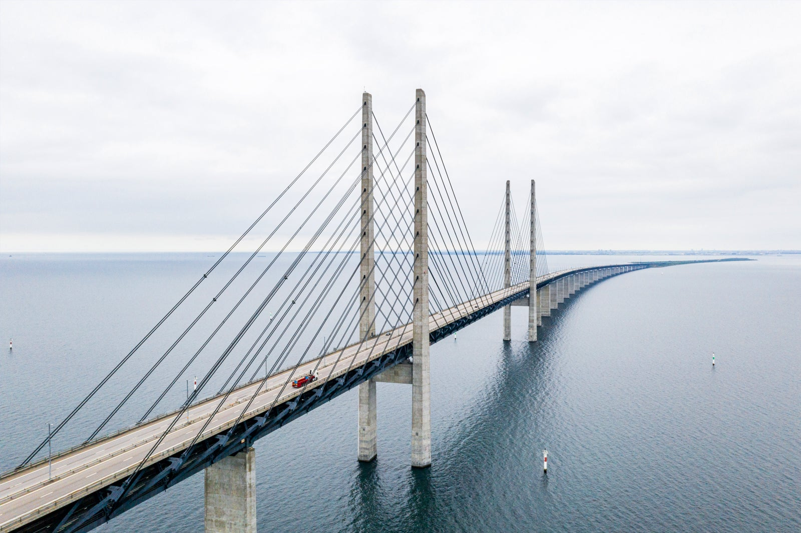
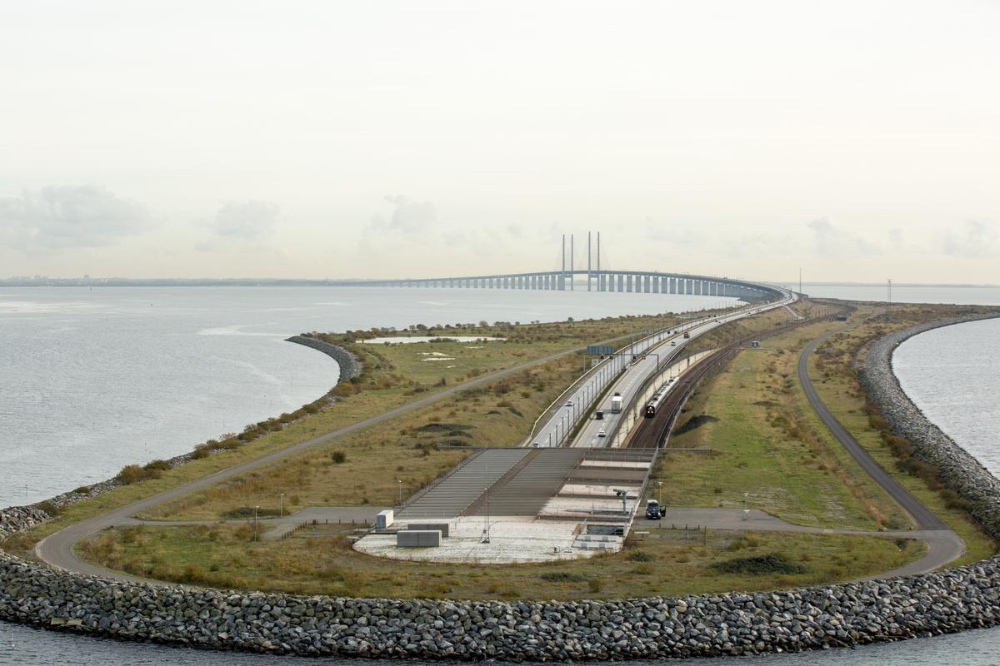
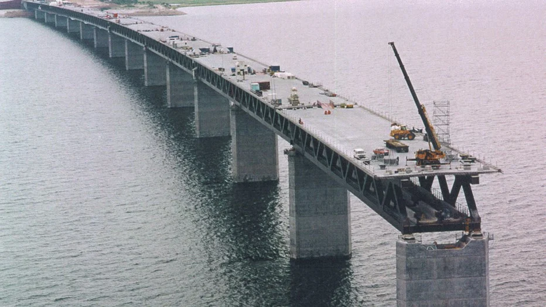
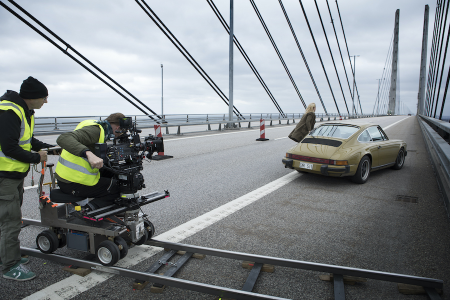

Bron - Öresundsbron


Om Öresundsbron
Länken över Öresund är 15,9 km lång och utgör en fast förbindelse över och under Öresund. Den går mellan Malmö och Köpenhamn och öppnade 1 juli 2000. Brodelen är 7,8 km lång. De 4 kilometerna närmast Danmark utgörs av en tunnel. Man gjorde detta velet eftersom spannet på en högbro hade varit en fara för flygtrafiken vid Kastrups flygplats.
Konstgjord ö
När bron ska övergå till en tunnel skapades ön Pepparholm. Den är cirka 4 km lång. Öresundsförbindelsen består av både motorväg och dubbelspårig järnväg. Den genomsnittliga trafikmängden 2014 var cirka 20 000 fordon och 33 000 tågpassagerare per dygn. Om man jämför med innan bron byggdes är nu trafikmängden fem gånger så stor.
Många planer
Genom åren har många förslag om en fast förbindelse över sundet funnits. Ett av de mest radikala var att fördämma sundet och sedan länspumpa för att skapa land för bebyggelse. Idéer om att bygga en bro mellan Sverige och Danmark fanns redan under andra halvan av 1800-talet.
1954 tillsattes en Öresundsdelegation för att utreda förutsättningarna för en broförbindelse. Delegationen föreslog i sitt slutbetänkande 1962 en 53 meter hög bro av armerad betong. Kostnaden beräknades till 600 miljoner kronor och skulle finansieras av en broavgift på 15 kronor. Efter detta har flera andra initiativ förekommit.
Öresundsförbindelsen kostade drygt 20 miljarder kronor. Till detta kommer anslutningar på land för runt 10 miljarder kronor. Därtill tillkommer cirka 10 miljarder för Citytunneln. Bygget påbörjades den 18 oktober 1995. EU har bidragit med 1,4 miljarder. Resterande delar betalades med lån tagna av brobolaget med statsgarantier. Lånen ska finansieras med broavgifterna.
Brons inblandning i TV-serien
Serien handlar om en kvinnlig polis som hittar en död kvinna mitt på Öresundsbron, precis på gränsen mellan Sverige och Danmark.
Tillbaka till toppen på sidan